Navegadores web são programas que te permitem acessar a World Wide Web e os websites. É o que te possibilita a acessar o Youtube, Google, Wikipedia, Twitter, Netflix, e qualquer outro site que você acessa e utiliza diariamente de forma fácil, rápida e conveniente. Eles são compatíveis com inúmeros dispositivos eletrônicos, incluindo computadores, celulares, relógios smart, consoles e televisões smart. Há centenas de navegadores disponíveis, mas o mais usado é o Google Chrome, com aproximadamente 66% do quota de utilização dos navegadores web em 2025.
Essa página contém a história dos principais navegadores (também de alguns menores e/ou mais desconhecidos) e minhas recomendações.
Para entender melhor a história dos navegadores web, é importante conhecer, pelo menos, o básico da história da internet. Clique aqui para entrar na página focada na história da internet e de outras redes.
Em 1990, o primeiro navegador foi desenvolvido por Tim Berners-Lee, chamado de WorldWideWeb na sua criação e renomeado para Nexus com o objetivo de evitar a confusão entre o navegador e a web em si. Foi também o primeiro editor web. Esse navegador foi criado para ser usado no sistema operacional NEXTSTEP, semelhante ao S.O. Unix. O código fonte do navegador foi lançado ao público em 1993, e foi descontinuado em 1994.
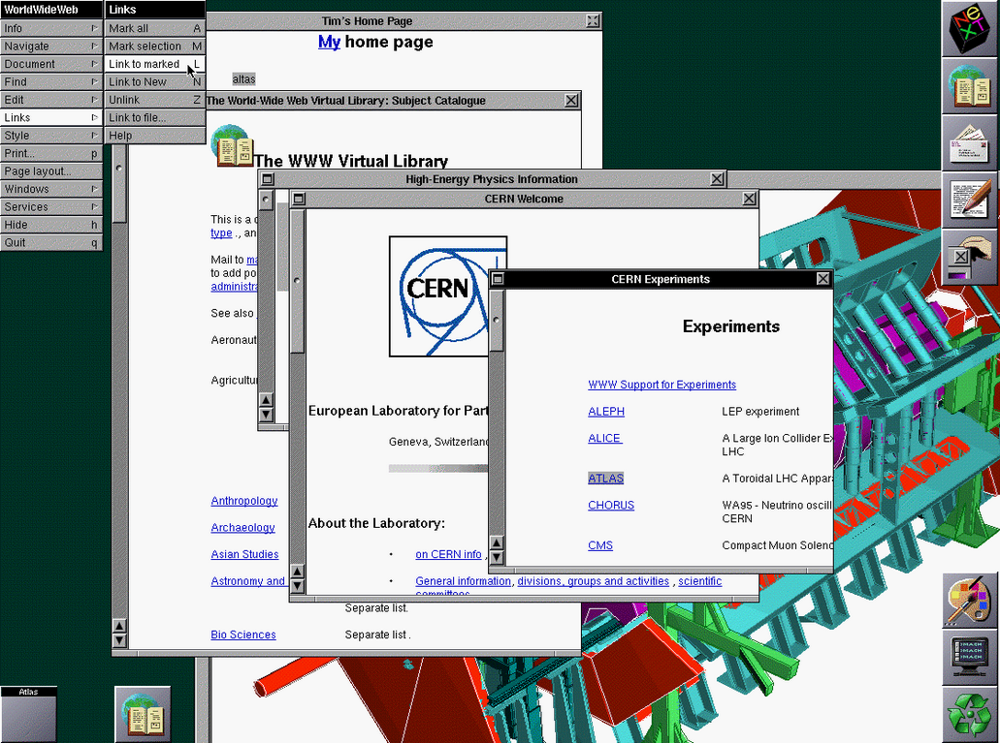
Mesmo sendo o primeiro navegador web da história, o WorldWideWeb/Nexus não foi o navegador que fez a internet explodir em popularidade. O navegador que causou esse boom foi o NCSA Mosaic, lançado em 1993.
O Mosaic foi um navegador desenvolvido por pessoas no National Center for Supercomputing Applications (NCSA) e foi um elemento crucial para o boom do uso da internet nos anos 90. Foi o primeiro a mostrar imagens dentro do body de um website ao invés em uma janela separada. Era compatível com as seguintes plataformas computacionais (a infraestrutura onde o software é executado):
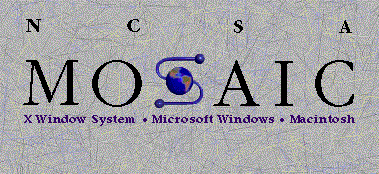
O motivo do Mosaic ser a razão por trás da popularização da web e da internet é que, além de ser o primeiro navegador criado e desenvolvido por um time de pessoas que trabalham com o desenvolvimento de software, foi o navegador que fez a internet acessível para usuários novos e comuns.
Um ano após do Mosaic a ser lançado ao público, um outro navegador foi lançado e "substituiu" o navegador Mosaic: o Netscape Navigator, desenvolvido pela Netscape Communications Corporation (NCC) e inspirado no sucesso do Mosaic. O Netscape Navigator foi lançado ao público em 1994.
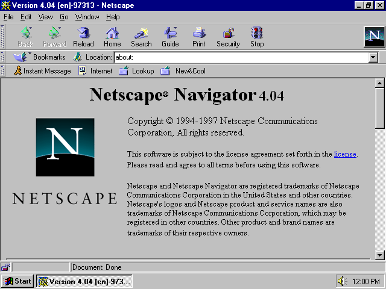
As features que o Netscape Navigator tinha inclui o fato que, ao invés de aparecer para o usuário somente quando a página inteira estava carregada, a página aparecia para o usuário enquanto ela carregava; a implementação de web cookies; e a implementação do JavaScript (na versão 2.0 do navegador e nas versões futuras).
A implementação de cookies foi uma decisão que causou algumas controvérsias. Pessoas que defendiam o direito do consumidor eram críticos aos web cookies e de páginas comerciais usando-os para invadir a privacidade do usuário.
Porém, no mercado, esses críticos causaram pouco impacto. O Netscape Navigator manteve-se como o líder no mercado dos navegadores web, com mais de 70% dos usuários da internet usando esse navegador em seu auge.
O rumo para o fim desse auge começou com a criação e o lançamento do navegador Internet Explorer, desenvolvido pela Microsoft e lançada ao público em 1995 no pacote Plus! para o Windows 95.
O Internet Explorer (IE) foi um navegador desenvolvido pela Microsoft que era incluído no sistema operacional Windows, com a sua primeira versão lançada em 1995. Algumas versões desse navegador eram também desenvolvidos para os sistemas Mac OS clássico, Unix e as versões Windows para telefones celulares.
Um ano depois da introdução da primeira versão do IE, uma empresa norueguesa multinacional chamada Opera lançou ao público o seu próprio navegador que havia começado a ser desenvolvido a cerca de dois anos atrás; o navegador Opera 2.0, sendo a série de navegadores Opera a primeira a ser desenvolvida com o foco completo de aderir aos critérios da World Wide Web Consortium (W3C) - principal organização de padronização da WWW, fundada por Tim Berners-Lee em 1994.
As versões 1.0 e 2.0 eram consideradas inferiores e primitivas comparadas com as versões do Netscape Navigator daquele tempo. Porém, a Microsoft, em 1996, conseguiu desenvolver uma versão do IE - a versão 3.0 - que era comparável ao Netscape, ou seja, uma versão do navegador que começou a competição entre o NCC e a Microsoft. Também foi o primeiro navegador comercial a conter suporte para programas com CSS.
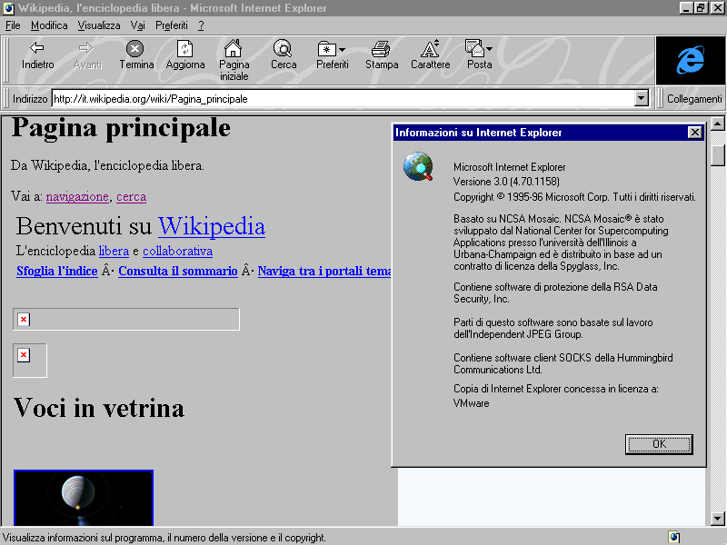
A versão 4.0 do Internet Explorer, lançada em 1997, contribuiu com o crescimento da Microsoft no mercado, tanto que foi o marco do início da guerra dos navegadores entre a NCC e a Microsoft, além de ser o ano que o navegador Mosaic foi descontinuado.
Porém, um ano depois, houve um processo feito pelo tribunal distrital do Distrito de Columbia, onde está localizado a capital dos Estados Unidos, contra a empresa. O tribunal acusou a Microsoft de ilegalmente monopolizar o mercado de navegadores web para o Windows. O departamento de justiça do país (Departamento de Justiça; DOJ) também participou do processo, e acrescentou na acusação feita pelo tribunal distrital que a Microsoft forçava as empresas que fabricaram computadores a incluir o Internet Explorer no processo de instalação do sistema operacional.
Um link para uma playlist de partes de gravações de Bill Gates presente em seu depoimento (interrogação feita em busca de provas) em 1998 no Youtube pode ser acessado aqui.
No próximo milênio - no ano 2000 - o tribunal distrital ordenou a separação da Microsoft em duas unidades como sua tutela. Uma parte da empresa desenvolvia o sistema operacional, e a outra parte desenvolvia outros programas para serem usados, sem serem componentes do sistema operacional. A empresa imediatamente realizou uma apelação para Corte de Apelações dos Estados Unidos para o Circuito do Distrito de Colúmbia.
Depois que a empresa fez a apelação para essa corte, o governo estadunidense realizou uma petição para pular a corte de apelações e mandar o caso diretamente para o Supremo Tribunal dos Estados Unidos. A Suprema Corte rejeitou e mandou o caso para o Circuito da D.C..
A corte de apelações rejeitou a setença feita pelo juíz, pois ele discutiu o caso inapropriadamente com a mídia enquanto o caso estava ocorrendo. Entretanto, ela não rejeitou a evidência que o juíz usou para criar a sentença dele.
Com isso, em 2001, o Departamento de Justiça anunciou que, ao invés da empresa ser quebrada em dois setores, a Microsoft deveria compartilhar sua interface de programação de aplicações (API) com empresas de terçeiros e selecionar três investigadores que teriam acesso completo aos sistemas, relatórios e códigos fonte da Microsoft por cinco anos para garantir que a empresa estivesse em acordo com a sentença. Porém, o DOJ não mandou para a Microsoft mudar qualquer parte de seu código e não previnia a Microsoft de incluir diferentes softwares junto com o Windows no futuro.
Em 1998, além de ser o ano onde a versão 3.5 do Opera foi lançada - versão onde implementou suporte para o CSS - a NCC anunciou que a Netscape Communicator, uma suíte de internet (conjunto de aplicativos relacionado a internet, como navegadores, e-mails, etc.) descontinuada lançada em junho de 1997, seria grátis e de código aberto. Então, Jamie Zawinski, um blogger e programador estadunidense que trabalhava para a NCC, registrou o domínio mozilla.org e usou-o para coordenar o desenvolvimento da Mozilla Application Suite, onde continha diversos programas: o Navigator (navegador), Communicator (e-mail e um newsreader), o Mozilla Composer (desenvolvedor para páginas web), ChatZilla (sistema para a comunicação com mensagens instantâneas) e um livro de endereços digitais. Esse ano marcou a criação da comunidade Mozilla.
No ano 2000, a K Desktop Enviroment (KDE) - comunidade focada em desenvolvimento de software FOSS (Free and Open Source Software; software gratuito e de código aberto), como o Krita e o Kdenlive - lançou o navegador e gerenciador de arquivos Konqueror, desenvolvido para alguns sistemas operacionais Unix-like (semelantes ao Unix).
Esse navegador utilizava os mecanismos de renderização KHTML para renderizar códigos em HTML e o KJS para renderizar scripts escritos em JavaScript, também desenvolvida pelo KDE. O KHTML foi utilizado como a base de outros mecanismos de renderização, como o WebKit (do Safari) e o Blink (do Chromium). O desenvolvimento cessou em 2016 e foi oficialmente descontinuado em 2023. Hoje em dia, o Konqueror utiliza o Qt WebEngine como seu mecanismo de renderização.
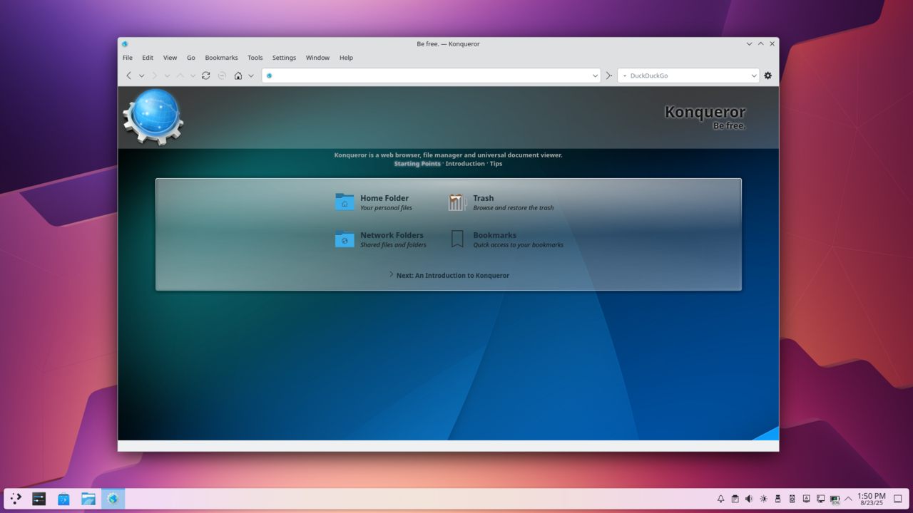
Três anos depois do lançamento do IE 3.0, a Microsoft lançou ao público o Internet Explorer 5.0, que tomou uma grande parte do quota de mercado do Netscape Navigator entre 1999 e 2001, tendo 80% do quota de mercado naquele ano (2001). Também em 2001, houve o lançamento da sexta versão do navegador. Ao contrário da versão anterior, o IE 6.0 foi altamente criticada pelas falhas de segurança e falta de suporte de acordo com o padrão da web daquele tempo.
Em 2002, a comunidade Mozilla lançou o navegador Phoenix 0.1, para combater o bloat de software na Mozilla Application Suite. O navegador Phonenix foi o antecessor do Firefox. Um ano depois, após a AOL afastar seu involvimento com a comunidade Mozilla, foi fundada a Mozilla Foundation, com o objetivo de se tornarem mais independentes da Netscape e do AOL.
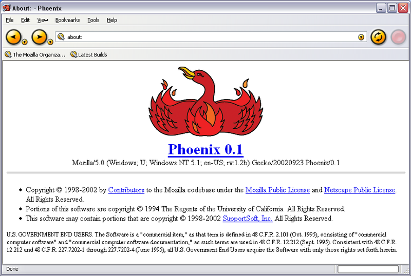
Também em 2003, Steve Jobs - fundador da empresa Apple - introduziu o navegador Safari, chamando-o de "um turbo navegador para o Mac OS X [atual macOS]" e o navegador mais rápido para os sistemas operacionais Mac. O navegador foi criado para entrar e dominar no mercado de navegadores. Foi também o ano que a Mozilla declarou que iria direcionar seu foco do Mozilla Application Suite para o desenvolvimento do Firefox.
A Mozilla, após serem pressionados pela Phoenix Technologies - empresa estadunidense especializada em desenvolvimento de software - renomeou seu navegador para Firebird. Mozilla novamente sofreu pressão a mudar o nome de seu navegador, agora pela Firebird Foundation - organização focada em manter o desenvolvimento do sistema gerenciador de banco de dados relacional (SGBDR) Firebird. Depois de mais pressão aplicada, em 2004, a Mozilla decidiu em renomear o navegador para Firefox, send isso o nome atual. No mesmo ano, a primeira versão do navegador Firefox desenvolvida com o público geral como público alvo foi lançada.
Na primeira metade de 2004, a empresa chinesa UCWeb - subsidiário da Alibaba - disponibilizou seu próprio navegador, o UC Browser, focado para ser usado em celulares. Já na segunda metade do ano, o Internet Explorer alcançou mais de 92% no quota de utilização dos navegadores. Porém, essa porcentagem caíu lentamente. Em 2013, foi registrado que aproximadamente 12% dos usuários da internet em 2013 utilizavam o Internet Explorer.
Em abril de 2005, vários dos defeitos (bugs) do Safari foram concertados pelo engenheiro de software Dave Hyatt. Com isso, no mesmo mês, a versão 2.0 do navegador Safari foi lançada ao público. Foi o primeiro navegador a passar o teste de renderização focado em CSS Acid2.
No próximo ano, cinco anos depois do lançamento do Internet Explorer 6, a sétima versão do navegador foi lançada no mesmo mês que o Firefox 2.0 foi feito acessível para o público usar. Grande parte do código do IE, como o renderizamento de páginas web, foram completamente renovados.
Também em 2006, sete cientistas da computação fundaram a organização Tor, chamado de The Tor Project, Incorporated. A Electronic Frontier Foundation (EFF) - grupo estadunidense advocador a direitos digitais fundado em 1990 - foi um dos patrocínios da Tor nos primeiros anos após a organização ser fundada, além de outras. Dois anos depois, em 2008, foi declarado o começo do desenvolvimento do navegador Tor, baseado no Firefox.
O desenvolvimento dos navegadores Chrome e Chromium começou em 2006 e foram lançados dois anos depois, desenvolvidos para os sistemas operacionais Windows XP e versões mais recentes do S.O. Windows daquele tempo. O Chrome é baseado no navegador Chromium, que é um navegador gratuíto e de código aberto. Foi também o ano que o Netscape Navigator foi descontinuado pelos desenvolvedores.
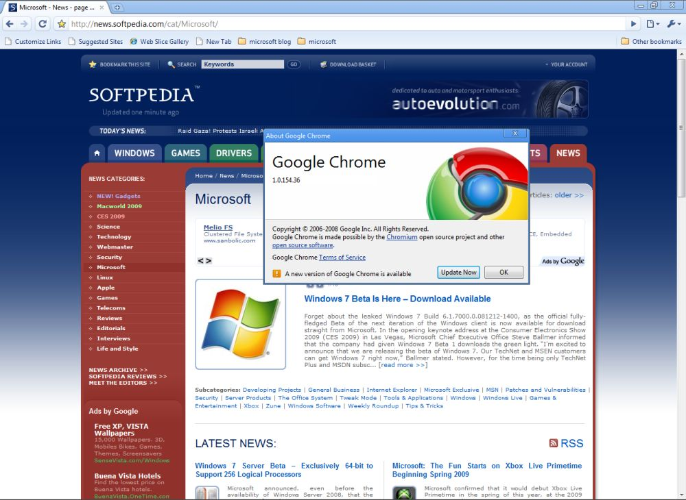
Quando foi feito acessível ao público, o Chrome foi criticado pelo fato de guardar as senhas de um usuário sem a proteção de uma senha mestre. A empresa Google insistiu que uma senha mestre não dava mais segurança contra hackers bons, mas os usuários afirmaram que isso iria proteger contra pessoas usando um computador de alguém e ver as senhas sem serem criptografadas. Em dezembro de 2009, Peter Kasting - co-fundador do Chrome - declarou:
"Nós não vamos implementar uma senha mestre. Nem agora, nem nunca. Discutir não irá fazer isso acontecer. 'Vários iriam gostar' não irá fazer isso acontecer. Nossas decisões de design não são democráticas. Você não pode ter o que você quer toda a hora" (tradução aproximada do inglês para o português brasileiro).
Alguns meses antes do Peter Kasting ter declarado isso, em março de 2009, a versão 8.0 do Internet Explorer foi feito disponível para o público. O IE 8.0 oferecia melhor suporte para os padrões da web do que as versões anteriores, com planos para melhorar o suporte para múltiplas linguagens essenciais para páginas web, incluindo o CSS. Foi também a primeira versão do IE a passar do teste Acid2.
Em 2010, a comunidade KDE disponibilizou outro navegador para o público, inicialmente desenvolvido para ser um projeto de pesquisa. Esse navegador era o QupZilla, atualmente chamado de Falkon. Esse navegador é desenvolvido para sistemas operacionais semelhantes ao Unix e para o Windows, porém é recomendado utilzar-o em sistemas Unix-like pois a versão para Windows é instavel, de acordo com esta página de download no site da comunidade KDE. Também foi o ano onde o Opera 11 foi lançado, introduzindo as extensões.
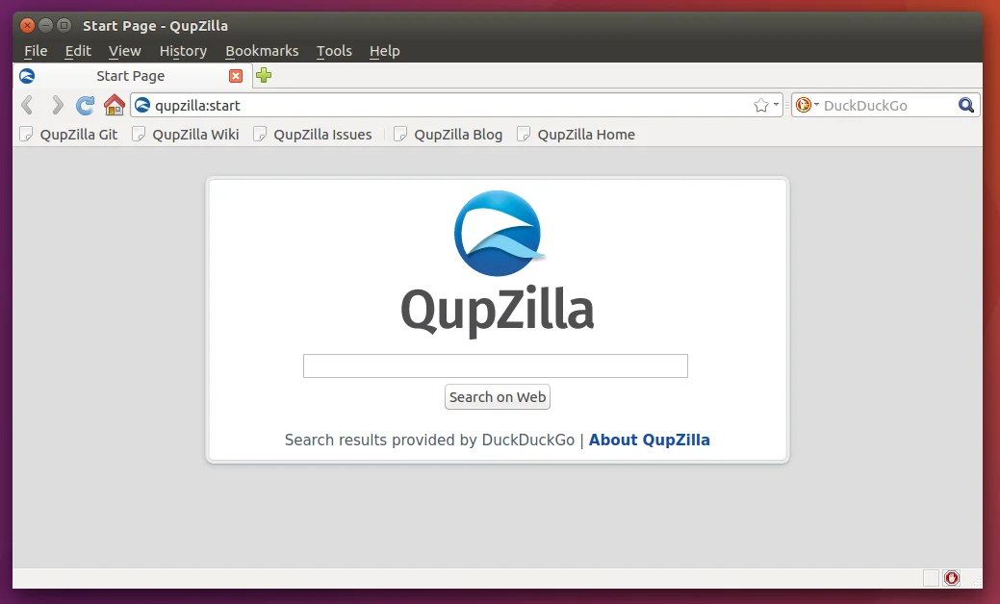
Em março de 2011, a Mozilla apresentou planos para trocar seu ciclo de desenvolvimento e manutenção anterior para um de 16 semanas, semelhante ao do Chrome. O plano foi implementado em abril. Esse ciclo é o ciclo de desenvolvimento atual do Firefox.
Em 2012, a empresa russa de tecnologia Yandex LLC (em russo: Яндекс) lançou o navegador Yandex Browser (em russo: Яндекс Браузер), baseada no Chromium. É o segundo navegador mais usado em computadores e o terceiro mais usado em celulares na Rússia. Foi o primeiro navegador a implementar o DNSCrypt - protocolo de segurança da internet que criptografa tráficos de Domain Name System (DNS) entre o usuário e servidores de DNS.
Mesmo com o DNSCrypt, o Yandex Browser não é considerado um navegador recomendável para pessoas com o foco em privacidade. Ele não é de código aberto e, de acordo com o cientista de computação Douglas J. Leith, o navegador manda identificadores de hardware e qualquer caractere escrito na barra de pesquisa e qualquer URL visitado pelo o usuário para a empresa.
Em fevereiro de 2013, a empresa Opera anunciou que deixaria o seu mecanismo de renderização Presto e substituir-o pelo WebKit, já que foi implementado no navegador Chrome. Dois meses depois, a empresa Google anunciou que, usando o código do WebKit, iria desenvolver o Blink. Com isso, a empresa Opera decidiu implementar o mecanismo de renderização Blink. Alguns meses depois, a primeira versão do Opera baseada no Chromium foi lançada.
Foi também o ano onde o navegador para celulares Samsung Browser foi feito disponível para o público, desenvolvido pela empresa de eletrônicos Samsung Electronics. O Samsung Internet substituiu o navegador padrão do sistema operacional Android em celulares da série Samsung Galaxy. Esse navegador é baseado no Chromium.
No final de 2013, a última versão do Internet Explorer foi lançada: o Internet Explorer 11. Foi adicionado suporte para o HSTS nessa versão. Dois anos depois, o Internet Explorer foi substituido pelo Microsoft Edge Legacy, anteriormente referido como Microsoft Edge, como navegador padrão do Windows.
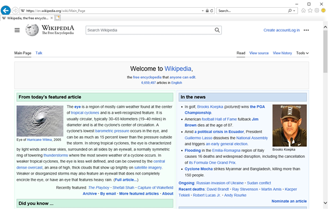
O Microsoft Edge Legacy é um navegador lançado em 2015, juntamente com o sistema operacional Windows 10. É o predecessor do atual Microsoft Edge. A primeira versão desse navegador havia, por exemplo:
Também em 2015, a empresa norueguesa de desenvolvimento de software Vivaldi Technologies lançou a primeira preview do navegador Vivaldi, baseado no Chromium, porém não é de código aberto. O navegador, mesmo que seja acessível para usuários comuns, é focado em usuários que utilizam recursos avançados em programas (chamados de power user) e ex-usuários do Opera discontentes após o Opera ter transicionado para um navegador baseado no Chromium.
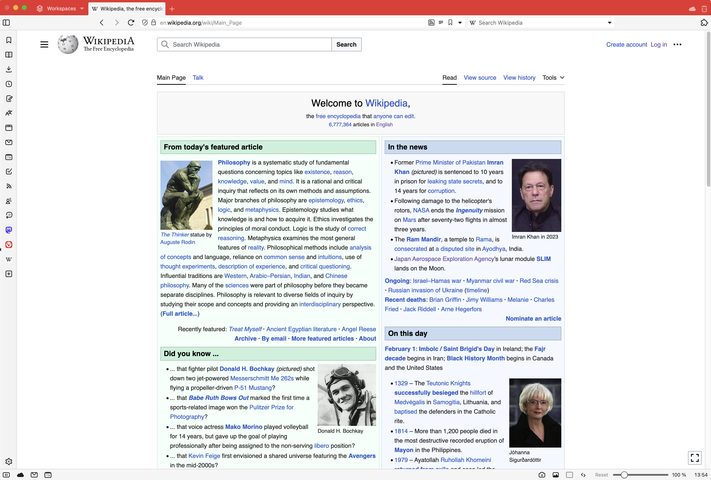
Além disso, Berndan Eich, criador do JavaScript e co-fundador da Mozilla, saíu da organização junto com o Brian Bondy pois era a favor a Proposition 8, uma proposição feita na Califórnia em 2008 que, se passasse, iria ilegalizar o casamento entre pessoas do mesmo sexo. Após saírem da Mozilla, fundaram a empresa Brave Software Incorporated e desenvolveram planos sobre criar um navegador que substituiria anúncios de websites com o seus próprios anúncios de uma forma que respeitasse a privacidade do usuário.
Em 2016, a empresa comprou o Link Bubble - navegador para o S.O. Android - e lançou a primeira versão do Brave. Em agosto desse ano, a empresa recebeu pelo menos US$7.000.000,00 por meio de investimentos anjo feitos por fundos de capital de risco, incluindo a Founders Fund do Peter Thiel, fundador e atual Presidente do Conselho de Administração da Palantir Technologies, empresa de software envolvida na expansão da vigilância governamental estadunidense por meio da IA e tecnologias de reconhecimento facial. E, além de ser o atual CEO da Brave Software Incorporated, Berndan Eich é também um dos consultores ("advisors") da Palantir.
Os e-mails relacionados ao Jeffrey Epstein lançados em 2026 revelaram que o fundo de capital de risco Valam Ventures, também fundada por Peter Thiel, aceitou 40 milhões de dólares do Epstein.
Em janeiro de 2016, a primeira versão estável - versão considerada segura o suficiente para ser usada normalmente - do Vivaldi foi lançada, inicialmente compatível somente para Linux, Windows e macOS.
Além de ser o ano onde o navegador Opera recebeu sua própria VPN gratuíta, foi inclusive o ano onde a empresa Opera foi adquirida por um grupo de investidores liderado por uma associação de várias empresas chinesas, como a Qihoo 360, que comprou a maioria da empresa por seiscentos milhões de dólares estadunidenses.
Em setembro de 2017, a empresa Apple lançou a Safari 11, que adicionou diversas features novas, como a Proteção Inteligente Contra Rastreamento (Intelligent Tracking Prevention), que amenizava o rastreamento entre sites por implementar limitações em cookies e outros dados. Esse recurso permitia cookies diretamente envolvido com o website a continuar rastreando o histórido do navegador com limites de tempo.
No próximo ano, em outubro, a empresa Brave Software Inc. anunciou que iria desenvolver seu navegador usando o código do Chromium como base. A empresa comunicou que não iria integrar serviços da empresa Google no navegador. De acordo com o Brave Software, o navegador teve um aumento de 22% na performance comparado com versões anteriores.
A empresa Google anunciou, no mesmo mês, um update para a API das extensões disponíveis no Chrome, denominado de "Manifest V3". Manifest V3 foi implementado com a intenção de modernizar a arquitetura das extensões, e aprimorar a segurança e desempenho do navegador. A empresa sofreu múltiplas críticas sobre o Manifest V3 pois, além de limitar a capacidade de bloqueadores de anúncios a bloquear elementos indesejados, a proibição de programas hospedados em máquinas remotas irá restringir a habilidade dos filtros de bloqueadores de anúncios de serem atualizados independentemente da extensão em si.
Em maio, foi lançado as versões para Android e iOS do Opera GX.
Dois meses depois, a Microsoft declarou que o Microsoft Edge seria reconstruído para um navegador baseado no Chromium e que utilizasse o Blink como mecanismo de renderização.
No ano de 2019, a empresa Opera anunciou e lançou com acesso antecipado o Opera GX para o Windows e macOS, uma versão do Opera orientado para jogadores de jogos virtuais. Esse navegador, além dos recursos do Opera normal, contém features implementadas para os "gamers" usarem, como um limitador que permite o usuário a limitar o uso do CPU, da memória, e da rede; uma ferramenta que limpa o cache, cookies, e arquivos indesejados pelo usuário; e integração com apps e websites como o Discord, Twitch, e Twitter.
Em janeiro da próxima década - 2020 - o Microsoft Edge foi feito disponível para o S.O. Windows. É um navegador baseado no Chromium que utiliza o mecanismo de renderização Blink. Esse navegador Edge substituiu o Microsoft Edge Legacy.
No mesmo ano, o navegador baseado no Firefox LibreWolf foi lançado pela comunidade do LibreWolf para sistemas operacionais baseadas no Linux. Esse navegador é gratuito e de código aberto, com seu foco principal a privacidade e a segurança do usuário. O bloqueador de anúncios e rastreadores FOSS uBlock Origin é pré-instalado no navegador, fazendo o LibreWolf um dos poucos navegadores com uma extensão pré-instalada.
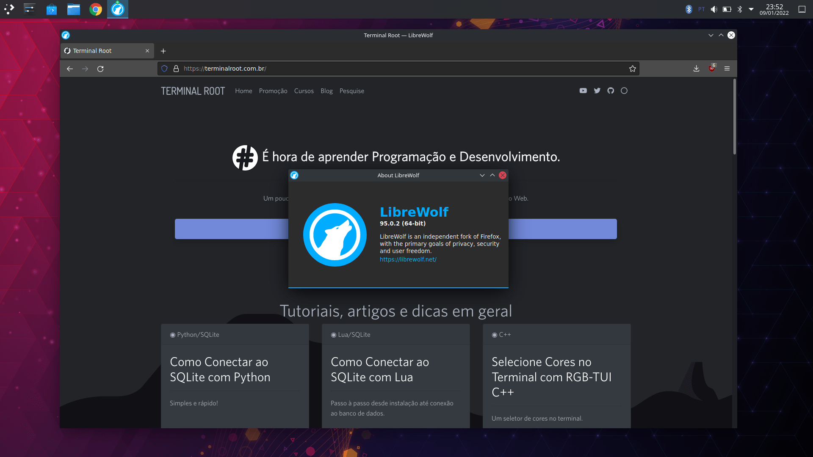
Cinco meses após o lançamento do Edge, o navegador foi criticado por ele ser instalado pelas atualizações do Windows e de importar dados do usuário de diferentes navegadores, como o Chrome e Firefox, antes de receber a permissão de realizar isso. A empresa Microsoft respondeu que se o usuário não permitir que o Edge colete dados de diferentes navegadores, o Edge irá deletar os dados importados. Porém, se o navegador "crashar" antes do usuário rejeitar a permissão, os dados importados não será removidos.
Em março de 2021, a empresa Brave Software anunciou que iriam adquirir o mecanismo de pesquisa Tailcat. Em outubro, Tailcat foi renomeado para Brave Search e se tornou o mecanismo de pesquisa padrão do navegador Brave.
Três meses depois, foi descoberto que a UC Browser estava gravando e mandando dados e endereços de IP do usuário para servidores da Alibaba.
Em 2022, o Microsoft Edge começou a mostrar pop-ups no site do Google Chrome para desencorajar o usuário de baixar o Chrome. Resultados similares aparecem quando o usuário pesquisa "chrome" ou "navegador" usando o Bing. Além disso, a empresa integrou uma VPN no Edge. Essa VPN é gratuíta, porém há um limite de 5 gigabytes de dados para serem usados por mês e é necessario conectar ao navegador com uma conta da Microsoft para recebê-los.
Em 2023, a empresa Brave lançou o Brave Leo, uma IA que, além de respeitar a privacidade do usuário, iria ser, por exemplo, um chatbot que iria resumir e responder perguntas sobre uma página. De acordo com a Brave Software, os dados iriam passar por uma proxy - servidor intermediário entre o usuário e o servidor principal - e que os modelos da IA estariam em seus próprios servidores da empresa. No próximo ano, o Brave Leo foi feito disponível para os S.O Android e iOS, e integrado no Brave Search.
A empresa Opera também integrou uma chatbot em seu navegador nesse ano, chamada de Aria, e é um resultado da colaboração entre o Opera e a OpenAI.
No mês de setembro de 2024, a versão 130 do Firefox foi lançada. Essa atualização adicionou um elemento na barra lateral onde possibilita o usuário a conversar com chatbots que o usuário escolher, como o ChatGPT e o Gemini.
Em janeiro do próximo ano, o navegador Microsoft Edge, de acordo com a StatCounter, é o segundo navegador mais usado no mundo, com o Chrome em primeiro e o Safari em terçeiro.
Já em outubro, a empresa OpenAI anunciou e lançou o ChatGPT Atlas somente para o macOS. É um navegador baseado no Chromium e integra a inteligência artificial ChatGPT como um asistente que pode responder perguntas sobre a página onde o usuário está, reescrever textos selecionados, e resumir conteúdos. Logo após o seu lançamento, críticas sobre sua privacidade e segurança já começaram a proliferar.
A LayerX Security encontrou uma vunerabilidade no navegador que, depois de um usuário clicar em um link malicioso, instruções escondidas poderiam ser injetadas na memória da IA sem o usuário saber e persistir entre sessões, dispositivos, e influenciar futuras interações com o ChatGPT. Um porta-vóz da OpenAI falou que a empresa não conseguiu reproduzir o ataque, que não acreditaram que o navegador era vunerável, e que não haviam observado evidências de verdadeiras tentativas de replicar o ataque.
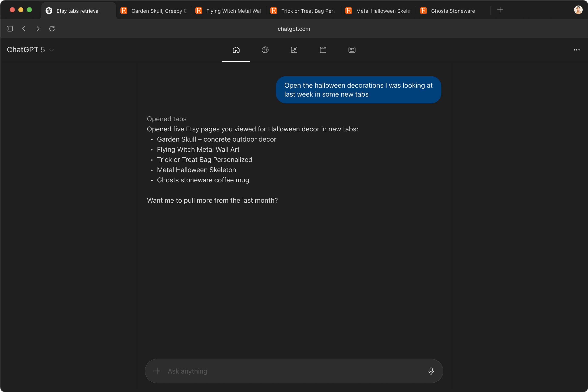
Em outubro de 2025, com o lançamento da versão alfa do Tor Browser 15.0a4, a organização declarou que irão remover qualquer recurso relacionado a IA generativa nas atualizações futuras do Firefox, pois essa técnologia é, de acordo com o Tor Project, inerentemente "infiscalizáveis" numa perspectiva da privacidade e segurança.
Dois meses depois, os desenvolvedores do navegador LibreWolf declararam a mesma coisa, que não irão dar suporte a recursos sobre a IA no LibreWolf, e que aqueles presentes no código do Firefox serão removidos.
Nessa parte do website, estarão as minhas recomendações de navegadores, tendo a privacidade como base, com as configurações padrões e sem modificações.
No caso do LibreWolf, ele incluirá o uBlock Origin pois vem juntamente com o navegador após a instalação.
| Comparação de navegadores: Geral e Conveniência | |||||||||||||||||||||||||||||||||||||||||||||||||||||||||||||||||||||||||||||||||||||||||||||||||||
|---|---|---|---|---|---|---|---|---|---|---|---|---|---|---|---|---|---|---|---|---|---|---|---|---|---|---|---|---|---|---|---|---|---|---|---|---|---|---|---|---|---|---|---|---|---|---|---|---|---|---|---|---|---|---|---|---|---|---|---|---|---|---|---|---|---|---|---|---|---|---|---|---|---|---|---|---|---|---|---|---|---|---|---|---|---|---|---|---|---|---|---|---|---|---|---|---|---|---|---|
| Desenvolvedor e primeira data de lançamento | É baseado em qual navegador? | Compatível com qual SOs? | É um navegador de código aberto? | Esse browser contém IA integrada? | Recomendo para ser usado no dia-a-dia em termos de conveniência? | ||||||||||||||||||||||||||||||||||||||||||||||||||||||||||||||||||||||||||||||||||||||||||||||
| Brave | Brave Software Incorporated; 20 de janeiro de 2016 | Chromium | Android, Windows, macOS, iOS, Linux, iPadOS | Sim. | Sim. | Sim, o Brave é um navegador bom (em termos de conveniência) para ser usado no dia-a-dia, de acordo o meu ponto de vista como um ex-usuário dele. A página principal é estéticamente boa e o navegador contém seu próprio adblocker. | |||||||||||||||||||||||||||||||||||||||||||||||||||||||||||||||||||||||||||||||||||||||||||||
| ChatGPT Atlas | OpenAI; 21 de outubro de 2025 | Chromium | macOS | Não. | Sim. | Informações insuficientes para chegar em um resultado. | |||||||||||||||||||||||||||||||||||||||||||||||||||||||||||||||||||||||||||||||||||||||||||||
| Chrome | Google, 2 de setembro de 2008 | Chromium | Windows, Linux, macOS, iOS, iPadOS, Android, ChromeOS | Algumas partes. | Sim. | Sim, o Chrome é conveniente de utilizar no dia-a-dia. Ele é rápido, simples, e os serviços do Google podem ser facilmente acessados na página inicial. | |||||||||||||||||||||||||||||||||||||||||||||||||||||||||||||||||||||||||||||||||||||||||||||
| Edge | Microsoft; 15 de janeiro de 2020 | Chromium | Android, Windows, Linux, iOS, iPadOS, macOS, visionOS, Xbox system software | Não. | Sim. | De acordo com a minha experiência usando-o; não, não é conveniente de ser usado no dia-a-dia. Ele é lento e, estéticamente, a página principal parece ter elementos excessívos, como uma secção da MSN logo abaixo da pequena barra de pesquisa. | |||||||||||||||||||||||||||||||||||||||||||||||||||||||||||||||||||||||||||||||||||||||||||||
| Falkon | KDE; dezembro de 2010 | Falkon | Linux, FreeBSD, Haiku | Sim. | Não. | Informações insuficientes para chegar em um resultado. | |||||||||||||||||||||||||||||||||||||||||||||||||||||||||||||||||||||||||||||||||||||||||||||
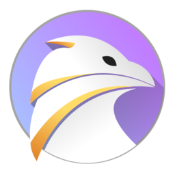 |
|||||||||||||||||||||||||||||||||||||||||||||||||||||||||||||||||||||||||||||||||||||||||||||||||||
| Firefox | Mozilla; 9 de novembro de 2004 | Firefox | Windows, Linux, macOS, Android, iOS, iPadOS | Sim. | Sim. | Sim, o Firefox é conveniente para usar no dia-a-dia, de acordo com a minha experiência. Simples e fácil de usar como o Chrome, com alguns serviços da Mozilla implementados, como o Firefox Relay. | |||||||||||||||||||||||||||||||||||||||||||||||||||||||||||||||||||||||||||||||||||||||||||||
| Konqueror | KDE; 23 de outubro de 2000 | Konqueror | Unix-like; Linux | Sim. | Não. | Informações insuficientes para chegar em um resultado. | |||||||||||||||||||||||||||||||||||||||||||||||||||||||||||||||||||||||||||||||||||||||||||||
|
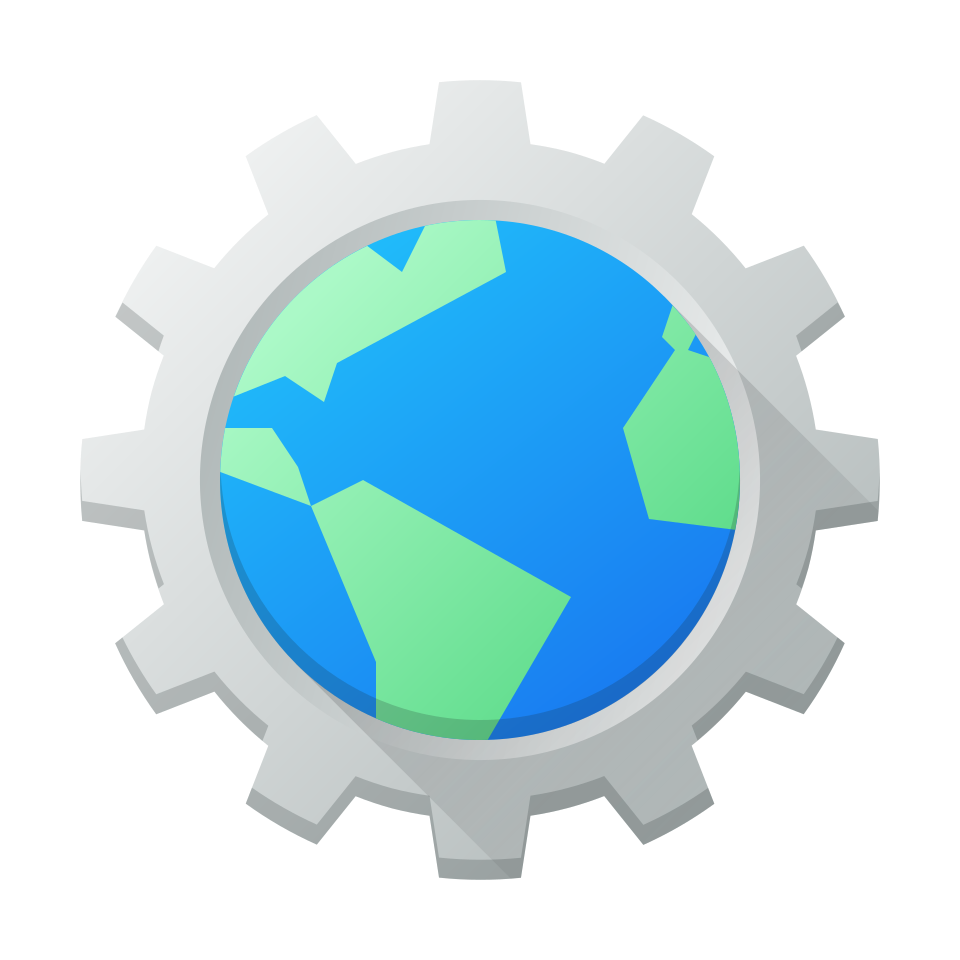 |
|||||||||||||||||||||||||||||||||||||||||||||||||||||||||||||||||||||||||||||||||||||||||||||||||||
| LibreWolf | Comunidade do LibreWolf; 7 de março de 2020 | Firefox | Windows, Linux, macOS | Sim. | Não. | Sim, o LibreWolf é conveniente de se usar no dia-a-dia. Ele é extremamente semelhante ao Firefox e o uBlock Origin é instalado juntamente com o navegador. Se não quiser utilizá-lo, é possível facilmente remover a extensão como se fosse qualquer outra. | |||||||||||||||||||||||||||||||||||||||||||||||||||||||||||||||||||||||||||||||||||||||||||||
| Opera | Opera; 10 de abril de 1995 | Chromium | Windows, Linux, macOS, Android, iOS, iPadOS | Não. | Sim. | O Opera é um navegador recomendável para ser usado diariamente. Com um bloqueador de anúncios e sua própria VPN, o Opera é uma boa escolha visando a conveniência e acessibilidade. Porém, algumas atualizações podem resultar em bugs e erros, atrapalhando a experiência de usar esse navegador. | |||||||||||||||||||||||||||||||||||||||||||||||||||||||||||||||||||||||||||||||||||||||||||||
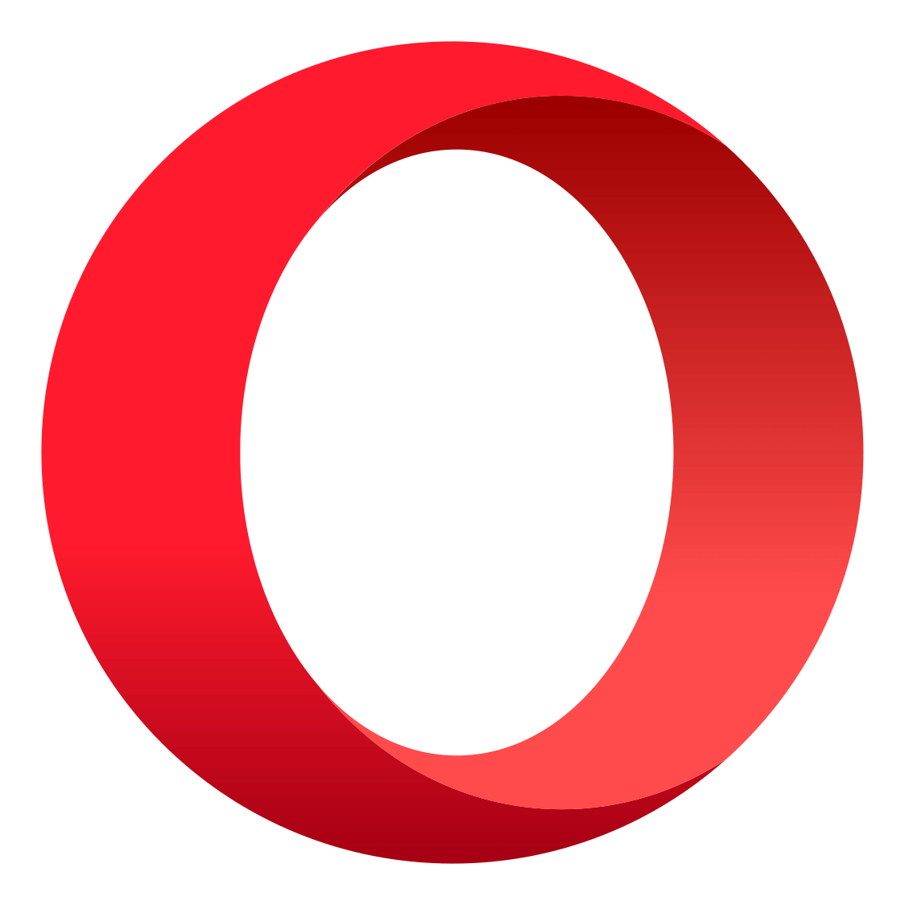 |
|||||||||||||||||||||||||||||||||||||||||||||||||||||||||||||||||||||||||||||||||||||||||||||||||||
| Safari | Apple; 7 de janeiro de 2003 | Safari | macOS, iOS, iPadOS, visionOS | Não. | Sim. | Para usuários no ecosistema da Apple, o Safari é uma sólida escolha, mesmo que seja o navegador padrão. A performance é boa, é fácil de se usar, e não usa quantidades altas de recursos no dispositivo. | |||||||||||||||||||||||||||||||||||||||||||||||||||||||||||||||||||||||||||||||||||||||||||||
| Samsung Browser | Samsung Electronics; 2013 | Chromium | Android, Windows, Wear OS, Tizen | Não. | Sim. | É um navegador conveniente de se usar no dia-a-dia. O SI têm o seu próprio bloqueador de anúncios e contém acessibilidade boa, além de outras features no navegador. | |||||||||||||||||||||||||||||||||||||||||||||||||||||||||||||||||||||||||||||||||||||||||||||
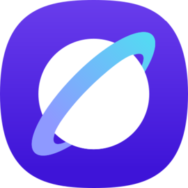 |
|||||||||||||||||||||||||||||||||||||||||||||||||||||||||||||||||||||||||||||||||||||||||||||||||||
| Tor | The Tor Project; 30 de janeiro de 2008 | Firefox | Windows, Linux, macOS, Android | Sim. | Não. | Não é recomendado usar-o no dia-a-dia. O navegador é, de acordo com a minha experiência, altamente lento por causa do roteamento onion, que é integrado no Tor. Há um capítulo sobre isso no site sobre a história da internet. | |||||||||||||||||||||||||||||||||||||||||||||||||||||||||||||||||||||||||||||||||||||||||||||
| UC Browser | UCWeb Alibaba Group; abril de 2004 | Chromium | Android | Não. | Não. | Informações insuficientes para chegar em um resultado. | |||||||||||||||||||||||||||||||||||||||||||||||||||||||||||||||||||||||||||||||||||||||||||||
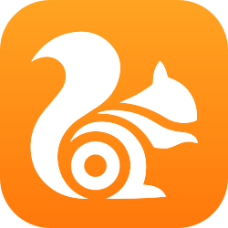 |
|||||||||||||||||||||||||||||||||||||||||||||||||||||||||||||||||||||||||||||||||||||||||||||||||||
| Vivaldi | Vivaldo Technologies; 27 de janeiro de 2015 | Chromium | Windows, Linux, macOS, iOS, iPadOS, Android | Algumas partes. | Não. | O Vivaldi é um navegador conveniente para ser usado no dia-a-dia. Ele contém um bloqueador de anúncios, rastreadores e de pop-ups, porém a performance não é uma das melhores. | |||||||||||||||||||||||||||||||||||||||||||||||||||||||||||||||||||||||||||||||||||||||||||||
| Yandex Browser | Yandex LLC; 1 de outubro de 2012 | Chromium | Windows, Linux, macOS, iOS, Android | Não. | Sim. | O Yandex é um navegador conveniente de se usar. A interface de usuário é boa e é decentemente acessível. | |||||||||||||||||||||||||||||||||||||||||||||||||||||||||||||||||||||||||||||||||||||||||||||
Agora, de acordo com a privacidade e a segurança, os três melhores navegadores e os três piores são:
| Comparação de navegadores: Placar da Privacidade | ||
|---|---|---|
| Top 3 Melhores | ||
| Tor | Considerado o "titã" dos navegadores focados em privacidade, o navegador Tor é um dos melhores para usuários focados em privacidade e anti-rastreamento. Lento, mas esconde você e seus dados - localização, requests, etc. - extremamente bem. Tem como mecanismo de pesquisa padrão o DuckDuckGo. Não te faz imune a ataques e a identificação, mas fazem-os serem extremamente difíceis de realizar. | |
| LibreWolf | Feito para o uso diário, o LibreWolf é uma ótima escolha para quem deseja estar privado sem ter que lidar com a lerdeza do Tor. Além de ter um bloqueador de anúncios e rastreadores FOSS que pode ser facilmente removido, o navegador contém várias opções para reinforcá-lo ainda mais, caso desejar. De acordo com a política de privacidade, os desenvolvedores não coletam os dados do usuário por meio do LibreWolf. Basicamente, esse navegador é uma versão altamente "blindada" do Firefox. Esse é o navegador que uso diariamente. | |
| Brave | O Brave é uma ótima escolha para usuários que estão no início do processo da conscientização de sua própria privacidade, e da coletagem de dados e rastreamento das Big Techs. O navegador contém seu próprio bloqueador de anúncios e rastreadores. Além disso, de acordo com a política de privacidade do Brave, a empresa não coleta o histórico de navegação do usuário; que alguns serviços, como sua própria VPN, precisam coletar o endereço de IP do usuário para funcionar; e que o usuário pode, em certas cituações, escolher quais dados podem ser compartilhados. Porém, pelo fato do atual CEO da Brave Software Inc. estar diretamente involvido com a Palantir e o Peter Thiel, essas afirmações podem se tornar duvidosas. | |
| Top 3 Piores | ||
| Yandex Browser | Esse navegador não é recomendado a ser usado se você importa com a privacidade de seus dados. O navegador Yandex coleta dados como seu endereço de IP, dados da rede usada, e dados sobre o disposivo utilizado. Além disso, a empresa sofre grande pressão do governo russo à compartilhar os dados de seus usuários. Múltiplas vezes, a empresa foi processada e pressionada por esse mesmo motivo. Por exemplo, em junho de 2023, a empresa foi processada por 2 milhões de rublos por recusar de dar Informações sobre os usuários para o Serviço Secreto Federal. | |
| ChatGPT Atlas | O ChatGPT Atlas derrota o propósito mais básico de um navegador web - realizar suas próprias pesquisas e suas próprias navegações na internet. O "mecanismo de pesquisa" padrão é o ChatGPT, que pode realizar as pesquisas por você, mesmo que cada pesquisa manual - aquela que você faz - utiliza somente segundos do seu tempo, além de usar muito menos água e eletricidade do que as inteligência artificiais. Já na área da privacidade, o ChatGPT pode escanear o seu navegador inteiro e usar esses dados para criar resumos, pesquisas, recomendações, etc. Claramente, isso pode ser detrimental à privacidade do usuário. Dados como senhas, e-mails, biométricas, identidade, presença online, etc, podem ser escaneados e a IA pode utilizar isso para treinar si mesmo e, consequentemente, contribuir ao crescimento do ChatGPT e da crise ambiental intensificada por essa tecnologia. | |
| Edge | Frequentemente considerado como um dos piores navegadores para a privacidade. O Microsoft Edge, além de ter o Microsoft Copilot 365 - IA generativa que, por causa de uma feature que está habilitada como padrão, coleta seus dados de múltiplos serviços da Microsoft para personalizar suas respostas - integrado no navegador, o navegador, em 2020, importou dados do usuário de diferentes navegadores, como o Chrome e Firefox, sem a permissão do usuário. Se já fez anteriormente, incluindo o fato do Edge ser de código fechado, o que impede a Microsoft - uma das maiores empresas de tecnologia do mundo - de continuar rastreando o usuário mesmo quando não estiver usando o navegador? | |